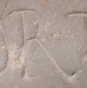

R - type2.2
- Script
- Latin
- Grapheme
- R
- Allograph
- type2.2
- Characteristic form:
-
- bowl is closed
- bowl is rounded
- downstroke is straight
- right-bar is diagonal
Typology
More general types
type2Exemplar

Origin: Thermae Himeraeae
between AD 101 and AD 300